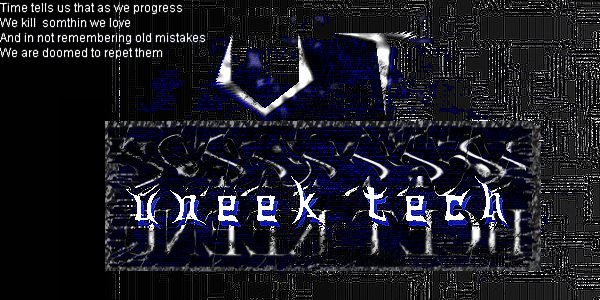

back again layin' the smackth down on another
one
im here to inform you of a security problem on ya site so chill
fix or ill be back!!! or if you need help email
"Times up world time to do somthin before it gets out of hand"
The future is in are hands, if we can not even put aside the differnces that make us split and hate. What will this be when you find out that your children don't belive in you because of your ways of the past. The only way we can start over is by remembering the past (this is key), but forgiving things that where done so long ago will make it better. Because the people you hate today are not the same and your byist attitude that you bring does not show any sign of making you fell better. We are tired of hearing that there is nothing we can do, even the idea of peace and rightfull treatment in some places are unknown. The twisting of young minds start at a young age ether by a parent or an individual that infuences most actions the kids do. As we aproch the year 2K I would like to see more things put toward better family life and the cuting down of all the split ups. How many kids have a the same mom or dad when they reach the age of 15, at my school at lest 3/4 of the kids parents split up, yet you still blame most actions by kids on Tv, movies, games or what ever you can blame to take it off you. It may not seem like it but you have to have some life with your kids even though most kids dont like there parents around, they will respect you more in the end.
shoutz out go to my friends from uneek tech
syxx, neeper, electr0n, p0g0, ps911, knell, da'bomb, dentist
shoutz to TPP, popimp,electrobank, guccilink, beastie, nemesytem,
so on......
_\|/_c4ndyman_\|/_ lightin it up for old time sake.
freedom is it real, yes it is and its right here freedom 1.0